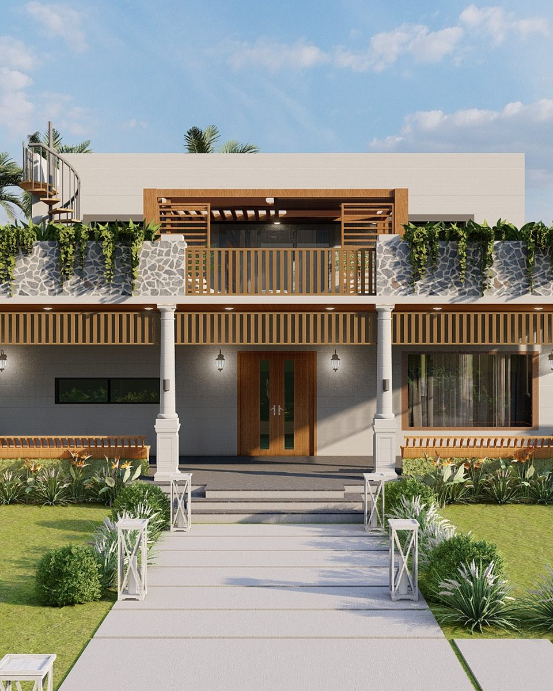

Ravi’s Farm House
ResidentialFarm house · A deep verandah, stone parapets and a pool deck
A two-storey farm house on a walled plot of plantations, with a garden court, parking along the drive and servant quarters. A deep verandah on round columns runs across the front, with a slatted timber valance and benches between the columns; above it, stone parapets trail creepers either side of a timber balcony, and a spiral stair climbs to the roof. At the back, a timber deck holds the pool and a barbecue area under a pergola. The ground floor has the foyer, drawing, living and dining rooms, the kitchen and a bedroom; upstairs are a central living area, two more bedrooms and a wide balcony with fire pits.